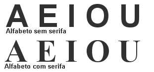
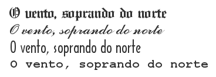
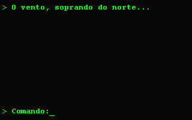
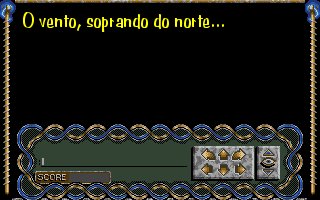
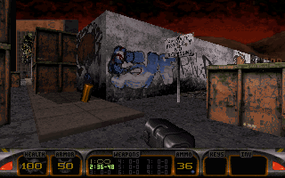
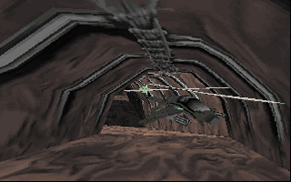
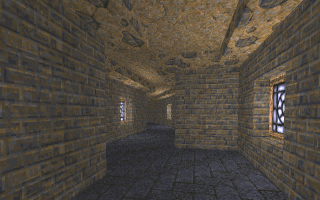
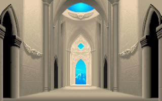
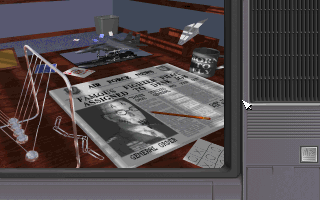
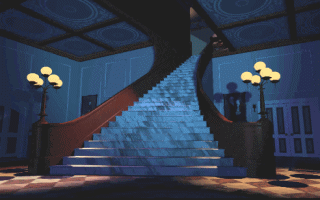

|
por Renato Degiovani
Talvez seja essa uma das afirmações mais freqüentes, em relação à criação de jogos e no entanto é certamente a mais mal compreendida. Para que um jogo "funcione" junto ao seu público, não basta ter um amigo que saiba desenhar muito bem. Antes é preciso conhecer alguns conceitos gráficos e visuais que, aplicados à estrutura funcional do jogo, podem tornar a sua criação uma experiência de sucesso. Tanto é assim que hoje em dia a maioria dos cursos universitários de Desenho Industrial e Comunicação Visual tem grupos desenvolvendo jogos, como trabalho final de graduação.
Mas, quem não é do ramo, não tem formação universitária, nem contato direto com nenhum designer, como resolve essa questão? Se esse é o seu caso, bem, aqui você encontrará algumas dicas para iniciar o estudo de um dos mais importantes aspectos da criação dos jogos: a estrutura visual.
Desenho Industrial aplicado à bidimensionalidade gráfica, ou seja, a Comunicação Visual, trata especificamente da elaboração de imagens de tal forma que transmitam eficientemente uma idéia, um conceito, uma mensagem, etc. Atingir este objetivo envolve conhecimentos técnicos e práticos que compõem o dia a dia desse tipo de profissional.
Mas atenção: isso não significa que devemos dar adeus aos jogos (principalmente adventures e muds) baseados apenas em textos. Muito pelo contrário. Mesmo um jogo "só" texto precisa de uma estrutura visual (para o texto). É aqui que se começa perceber o que destaquei no início deste artigo: o visual não é formado apenas por imagens bonitas; há algo mais nele.

Alfabeto Serifado e Sem-Serifa
Por exemplo: num adventure texto, cujo enredo foi ambientado na idade média, nada é mais incorreto do que usar o alfabeto ASCII puro. Nem mesmo as razões técnicas justificam isso nos tempos modernos (a menos é claro que o autor pretenda que seu jogo rode em máquinas do século passado, ou seja transmitido por sinais de fumaça).
Um alfabeto com serifas bem demarcadas, como o Old English, seria uma escolha lógica. Mas aqui também é preciso cuidado para não exagerar na "climatização", pois a legibilidade vem sempre em primeiro lugar. Lembre-se que um jogo é para ser jogado e não simplesmente admirado.

Exemplos diferentes de famílias tipográficas
Tal afirmação vale também para as imagens estáticas (fundos, bordas, cenários, planos, etc). Por mais bonitas que sejam, elas estão lá para cumprir a missão de integrar o jogador ao enredo do jogo e não para participar de uma exposição de arte. A beleza demais, tanto quanto a falta dela, pode confundir o jogador e desviar a sua atenção do que realmente importa no jogo.


Dois exemplos do que poderiam ser um adventure "apenas texto"
O autor deve estar seguro o bastante para "cortar" todo e qualquer exagero e a melhor forma de fazer isso é lembrar dos botões do Windows: são apenas duas imagens (botão apertado e botão livre) e no entanto, quando acionamos um desses botões, nosso cérebro compreende a operação com a maior facilidade. Não é preciso fazer com que o botão seja sofisticado, para que ele cumpra a sua função. As imagens do jogo, principalmente os cenários, precisam participar do enredo como componentes e não confrontá-lo.
Além da adequação estrutural, dos elementos gráficos de um jogo, é preciso considerar também a sua realização. Freqüentemente, durante a fase de planejamento, pensa-se em muitas e belas imagens, para ilustrar nosso jogo. É difícil evitar isso, mas não podemos esquecer que essas imagens terão que ser construídas, não importa como ou através do uso de quais ferramentas.
Então, precisamos estabelecer também no planejamento, qual será efetivamente a participação das imagens, em nosso jogo. Para compreender melhor esse aspecto, vamos dividir os jogos em duas categorias: aqueles que usam imagens "reais" e os que usam imagens "ilustrativas".



Três exemplos de cenários 3D, encontrados em jogos bem conhecidos: Duke Nuken, Terminal Velocity e Quake
Por exemplo: jogos em 3D (primeira pessoa) usam imagens reais, ou seja, aquilo que o jogador vê corresponde efetivamente à realidade do jogo, ou do seu cenário, ou ainda do seu universo. É a forma visual mais completa que temos à nossa disposição, mas não é a mais prática.
Explico: num jogo 3D, apenas um cenário pode demandar um trabalho volumoso só para a sua concepção e realização e no entanto servir para absolutamente nada. Nos jogos 3D mais conhecidos isso acontece com freqüência: passamos por salas e ambientes que estão lá apenas para fazer número e não desempenham nenhuma função crítica ou importante para o jogo. Mas estão lá e fazem parte do cenário - isso não é errado, mas deve ser considerado pois exige trabalho de quem vai ficar responsável por fazer os cenários.



Três exemplos de cenário estáticos (ou semi): Space Hulk, F15 e The 7th Guest
O estilo ilustrativo, ou seja, as imagens são basicamente estáticas e funcionam como se fossem uma fotografia do cenário, não é tão interativo como o 3D real, mas simplifica bastante o trabalho "braçal" de construção do jogo, além de permitir uma maior riqueza nos detalhes. Essa simplificação pode ser benéfica na hora de otimizar não apenas o jogo em sí, mas principalmente o trabalho de construí-lo.
Seja como for, é importante ressaltar mais uma vez que não basta que as imagens ilustrativas sejam maravilhosas, ou que o cenário 3D tenha mais de mil ambientes. Não é isso que garante a qualidade do jogo. Pode impressionar os jogadores, por um tempo, ou até mesmo os "comentaristas de plantão", mas certamente um jogo desses não terá fôlego para atravessar sequer um período pequeno, na historiografia dos jogos mais apreciados.
Lembre-se que há, ou deve haver, sempre uma boa razão para a parte gráfica do jogo ser como é. Nada deve ser deixado ao acaso ou pior, estar vinculado apenas ao gosto do autor do jogo.
|